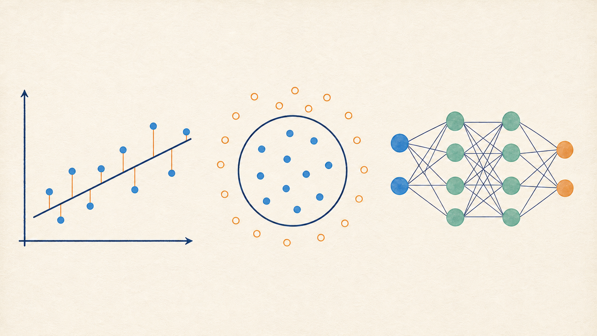
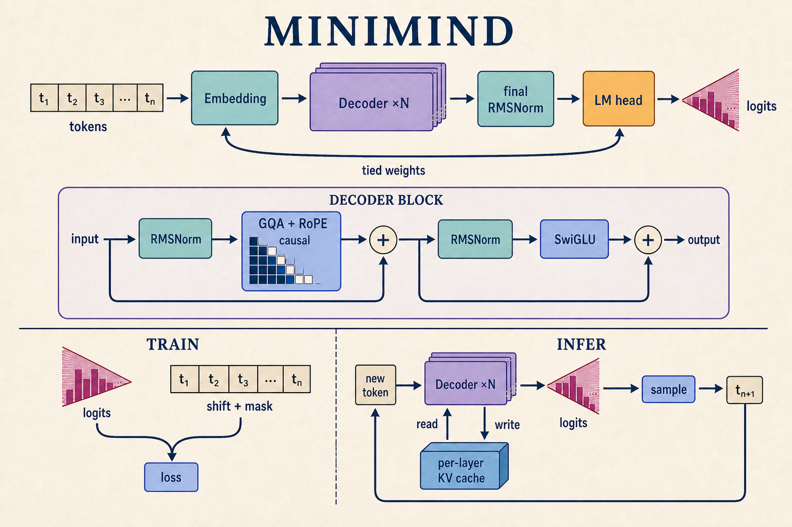
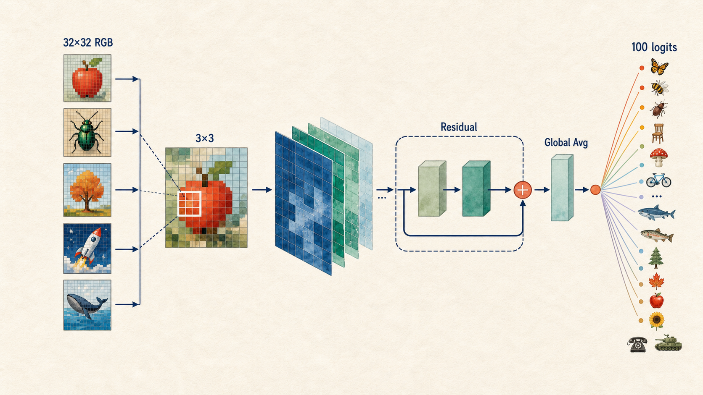
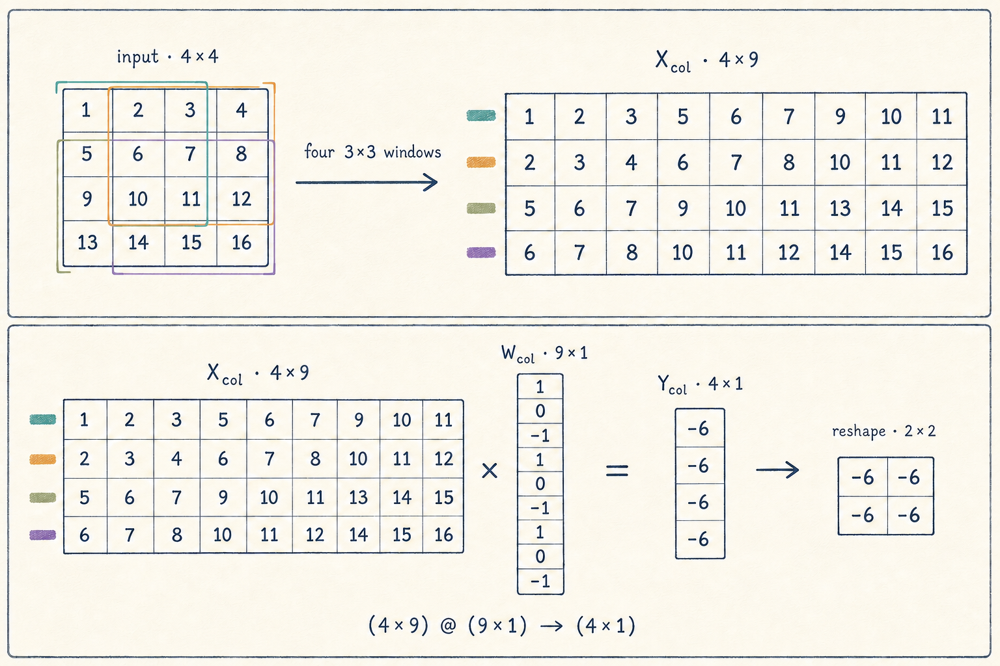
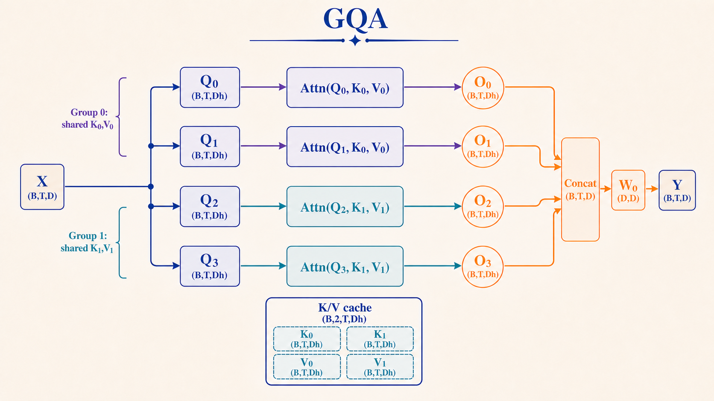
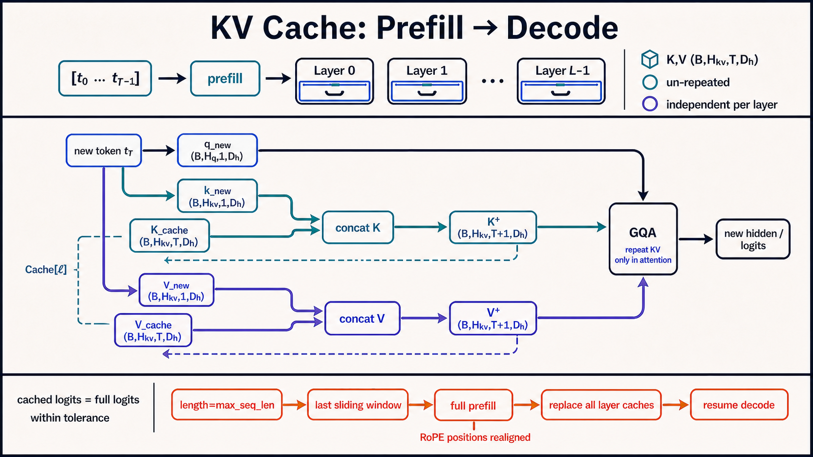

基础网络与反向传播
从线性回归和二维分类开始，实现 Layer、Loss、Optimizer 与 Sequential，再用于 MNIST 分类。
线性回归圆形分类Mini DL LibraryMNIST MLP
阅读章节 ↗
这套中文教程从 NumPy 中的基础网络开始，依次实现 CIFAR-100 ResNet 和 decoder-only Transformer。每节包含讲解、代码、运行命令与结果核对。

Decoder-only Transformer：训练主线与 KV Cache 推理
章节按实现依赖排列。每个模块都保留独立示例，也提供可以连起来运行的完整实现。
从线性回归和二维分类开始，实现 Layer、Loss、Optimizer 与 Sequential，再用于 MNIST 分类。

实现 im2col 卷积、池化、BatchNorm 和残差块，并组合为 CIFAR-100 图像分类模型。

实现位置编码、causal attention、RoPE、GQA、SwiGLU、采样与逐层 KV Cache。
配图与代码采用相同的矩阵方向、张量 shape 和 head 映射。相关数值由仓库测试核对。



测试覆盖数据集隔离、有限差分梯度、causal 性质、单 batch 拟合和 checkpoint round-trip。它们用于检查实现约束，不替代完整训练指标。
查看测试代码 ↗$ python -m unittest discover -s tests -v ✓ circle labels & split isolation ✓ conv2d finite-difference gradient ✓ residual identity / projection ✓ causal attention property ✓ checkpoint round-trip Ran 43 tests OK